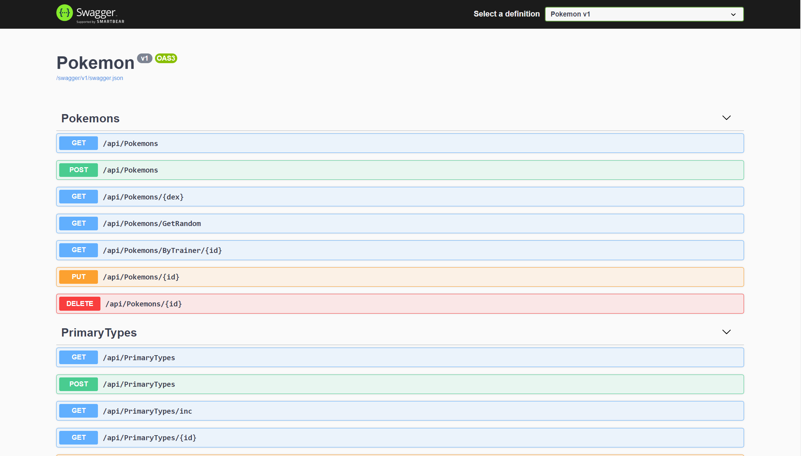

My Work
Java TCP/IP Client-Server Project
In my sixth semester one of the courses I took was on mobile development with Java, which included a hands-on test that required me to create a TCP/IP client-server chatroom. This was pretty different from what I'd done to that point, which was almost exclusively done in C# and was more focused on developing stand-alone apps that would at most communicate with a database. It was also my first time doing any work with multithreading, which was difficult at first but enjoyable to work through.
Skills used: Java, TCP/IP networking, organization
You can find the source code for this project in its GitHub repository.


This Website
I made this entire site from scratch for COMM1310 in my final semester with Niagara College with HTML and CSS with Bootstrap. I didn't have much experience with web development specifically before this project, having worked mainly with MVC views and razor code in C#, but this project seemed like a great opportunity to get some more experience creating responsive, modern web pages.
Skills used: UX design, HTML/CSS
You can find the source code for this project in its GitHub repository.
Custom API with C# MVC Framework
During my fourth term I took a course in mobile development where I learned how to build custom API's and Xamarin Forms (MAUI.NET) apps in C# using both MVC and MVVM design patterns. For my final project in this course, I decided to build an API and accompanying Xamarin Forms app. The Xamarin Forms app is still in development, but the API is functional with Swagger.
Skills used: Organization, C#, MVC (API), MVVM (XF), Swagger
You can find the source code for this project in its GitHub repository.
Community Project - C#/SQLite Point Of Sales System
At the beginning of my fourth term with Niagara College, I was put into a team of six that I had previously worked with in another course with the intention of taking on a long-term live development process for a local charity competing with three other groups for app adoption.
Throughout the four month long term, we designed the application from the ground up, meeting with the client regularly to make sure we were including everything they wanted and were able to plan for future feature implementations. This made for a great lesson in the importance of teamwork and communication on large projects, especially given the tight deadlines we had to work with. We built the application using the C# MVC framework for all the inner workings and front end, and SQLite for their database.
Skills used: Teamwork, communication, C# MVC, UX design